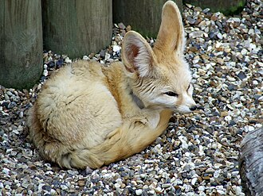

ფენეკი მსოფლიოში ყველაზე პატარა მელაა, ღამურას მსგავსი უზარმაზარი ყურების მეშვეობით არეგულირებს ორგანიზმის ტემპერატურას და სიგრილეს ინარჩუნებს. გრძელი სქელი ბეწვი ღამით სიცივისგან და დღისით მხურვალე მზისგან იცავს. მისი თათებიც კი ბეწვითაა დაფარული, რაც თხილამურის პრინციპით მოქმედებს და უკიდურესად ცხელი ქვიშისგან იცავს. ფეხებით საკმაოდ კარგად თხრის, ცხოვრობს მიწისქვეშა ბუნაგებში.[2] უდაბნოს მრავალი მობინადრის მსგავსად, ამ მელასაც შეუძლია წყლის გარეშე დიდხანს გაძლება.[3]

- მისი ყურები 15 სმ-მდე აღწევს.
- ის უდაბნოში ცხოვრობს, ძირითადად სელექციურად ნადირობს.
- ღამით აქტიურია და დღის დროს თავის ბურღებში ისვენებს.